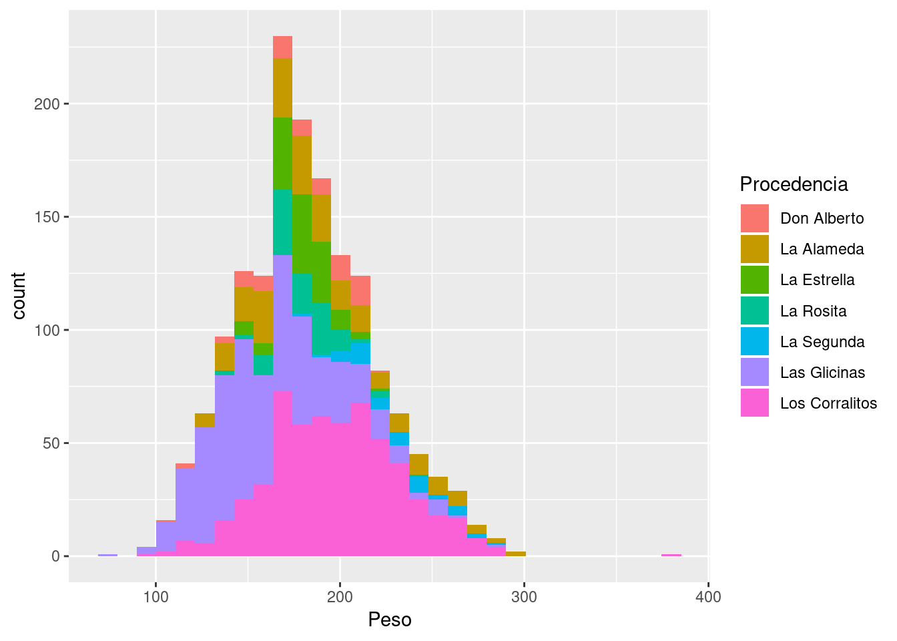

Capítulo 4 Introducción a ggplot2
4.1 Sistemas de gráficos en R
R cuenta con tres sistemas para graficar:
El básico o
base plot system, que viene por defecto y tiene funciones para hacer gráficos simplesplot()y otras (hist(),barplot(),boxplot(), etc). Usa un enfoque lienzo y lapiz donde cada capa se tiene que ir agregando una por una. El para gráficos más complejos (con subgrupos o multipanel) requiere programar más. Una desventaja es la sintaxis poco consistente.El paquete
latticedesarrollado por Deepayan Sarkar, que implementa graficos tipotrellis(multipanel). Al contraro de el paquetebase,latticetiene un sintaxis más coherente y en vez de tener un enfoque lienzo y lápiz, todos los componentes del gráfico se declaran en una función. muy conveniente para graficos condicionales pero complicada para combinar gráficos o hacer ajustes finos.El paquete
ggplot2, desarrollado por Hadley Wickham, está basado en la filosofía Gramática de gráficos (grammar of graphics). Combina los dos enfoques: lienzo-lápiz y función. Uno provee los datos, indica que variables asignar a las estéticas (ejes, escalas, colores, símbolos) y tipo de gráfico hacer yggplot2se encarga del resto. Puede ir agregando capas. Es muy potente para la exploración y visualización de datos en formato de tabla con filas (observaciones) y columnas (variables).
4.2 ¿Cómo conseguir ggplot2?
Para instalar por primera vez en la computadora:
Lo anterior se debe realizar por única vez si el paquete no está previamente instalado en la máquina. Para usar las funciones en una sesion de trabajo hay que cargarlo con library():
R va a avisarnos en la consola que esta enmascarando (reemplazando) algunas funciones que ya estaban en el entorno, o bien el paquete nos devuelve algun mensaje. A menos que diga Error ..., eso está bien.
4.3 Partes básicas de un gráfico
Si bien es dificil resumir como trabaja ggplot2 en un párrafo, la estrategia para graficar puede resumirse así:
- Se comienza con
ggplot()para suministrar el set de datos y se definen. Se definen los parámetros estéticos, i.e. que variables van a los ejes, colores, escales, etc., con laaes().
En este caso el set de datos es terneros y queremos hacer un histograma. En el eje x vamos a indicar el Peso y en relleno vamos a indicar la Procedencia
library(readxl)
terneros <- read_excel("./data/pesada_terneros.xlsx")
# Iniciar objeto
p <- ggplot(terneros, aes(x = Peso, fill = Procedencia))
p- Luego agregar las capas o layers con las geometrías
geom_*que uno quiere graficar (tipo de gráfico)
En este caso como es un histograma entonces geom_histogram() es la geometría indicada.
## `stat_bin()` using `bins = 30`. Pick better value with `binwidth`.
- Si es necesario ajustar la escala de colores con
scales_. En este caso vamos a probar un gradiente de colores conscale_color_brewer().
## `stat_bin()` using `bins = 30`. Pick better value with `binwidth`.- Suponiendo que queremos dividir en paneles se puede usar
factes_wrap(). En este caso agregamosFechacomo facets.
## `stat_bin()` using `bins = 30`. Pick better value with `binwidth`.- Se puede modificar los ejes de coordenadas con las funciones de tipo
coords_(). Por ejemplo, para ilustrar vamos a rotar el gráfico.
## `stat_bin()` using `bins = 30`. Pick better value with `binwidth`.- Por último se pueden modificar los títulos de los ejes y otros detalles como la leyenda
## `stat_bin()` using `bins = 30`. Pick better value with `binwidth`.## `stat_bin()` using `bins = 30`. Pick better value with `binwidth`.
4.4 Todo en un solo paso
Anteriormente fuimos agregando partes al gráfico. Una característica de ggplot2 es que mediante + se pueden ir combinando los comandos.
p <- ggplot(terneros, aes(x = Peso, fill = Procedencia)) +
geom_histogram() +
scale_fill_brewer("RdYlGn", type = "div") +
facet_wrap(~ Fecha) +
coord_flip() +
labs(x = "Peso (kg)", y = "frecuencia") +
guides(fill = guide_legend(title = "Procedencia"))
p## `stat_bin()` using `bins = 30`. Pick better value with `binwidth`.O más avanzado, agregando estadísticas de resumen calculadas
# Agregar linea representando medias por procedencia y fecha
library(dplyr)
med <- terneros %>%
group_by(Procedencia, Fecha) %>%
summarise(media = mean(Peso))
med## # A tibble: 12 x 3
## # Groups: Procedencia [?]
## Procedencia Fecha media
## <chr> <dttm> <dbl>
## 1 Don Alberto 2017-04-20 00:00:00 179.
## 2 La Alameda 2017-04-18 00:00:00 190.
## 3 La Estrella 2017-04-12 00:00:00 179.
## 4 La Rosita 2017-04-06 00:00:00 180.
## 5 La Rosita 2017-04-10 00:00:00 182
## 6 La Segunda 2017-04-20 00:00:00 229.
## 7 Las Glicinas 2017-04-09 00:00:00 163.
## 8 Las Glicinas 2017-04-10 00:00:00 159.
## 9 Los Corralitos 2017-04-10 00:00:00 198.
## 10 Los Corralitos 2017-04-11 00:00:00 196.
## 11 Los Corralitos 2017-04-12 00:00:00 200.
## 12 Los Corralitos 2017-04-20 00:00:00 182# Combinar en el grafico (coord_cartesian para que vuelva a horizontal)
p + coord_cartesian() + geom_vline(data = med, aes(xintercept = media))## Coordinate system already present. Adding new coordinate system, which will replace the existing one.## `stat_bin()` using `bins = 30`. Pick better value with `binwidth`.